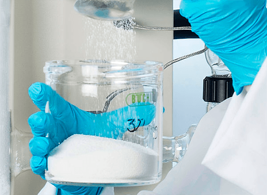

+7 4912 30 19 33
Под маркой PLEVREN фирма “Zschimmer & Schwarz Mohsdorf”, Германия предлагает целый ряд фосфонатов, которые применяются для производства средств бытовой химии и в водообработке вот уже несколько лет. Представленные фосфонаты имеют сходные общие химические свойства, предполагающие общую взаимозаменяемость фосфонатов. Однако, такая точка зрения не совсем верная. Так как фосфонаты имеют различную химическую структуру , то, соответственно, и выраженные их характеристики проявляются по-разному. Этот факт позволяет предлагать из нашего ассортимента продукты, которые могут использоваться в различных химических и технических сферах.
Фосфонаты «ZSCHIMMER & SCHWARZ» Германия
В современном пищевом, пивном производстве, виноделии, молочной и мясной промышленности используются закрытые герметичные системы для изготовления продукции. Такое оборудование необходимо периодически очищать и дезинфицировать, не разбирая его на составные части. Для этого существуют специальные станции, называемые CIP-мойками.
Сырьё марки PLEVREN для производства моющих средств и очистителей для CIP — мойки оборудования
Будь то для домашнего хозяйства или крупной промышленности, для производства моющих средств и косметики, а также бумажных и текстильных изделий или в опреснительных системах и системах охлаждения воды, где вода используется в промышленных масштабах, повсюду используются фосфонаты компании Zschimmer & Schwarz. Благодаря своим выдающимся свойствам они гарантируют как экономичные, так и энергоэффективные результаты. В тесном сотрудничестве с нашими клиентами мы разрабатываем специальные продукты, адаптированные к потребностям и требованиям заказчика, которые последовательно отвечают самым высоким стандартам безопасности, качества и окружающей среды.
Фосфонаты PLEVREN
Под торговой маркой PLEVREN® Zschimmer & Schwarz предлагает широкий спектр фосфонатов. Основной раздел профиля содержит информацию о восьми различных химических молекулах (HEDP, ATMP, DTPMP, EDTMP, HDTMP, HEMPA, PBTC, BHMTMP), которые производятся в различных формах. Преимущественно продукты предлагаются в различных формах соли - натрия (Na+), калия (K+), аммония (NH4+) – с различными показателями pH или содержанием активной субстанции. Zschimmer & Schwarz предлагает в своей программе фосфонатов марки PLEVREN® оптимальные решения для широкого спектра использования на производстве: начиная от использования для производства моющих и чистящих средств до использования в процессах водообработки в целом, а также для производства химматериалов для нефтедобычи, косметической и строительной индустриях..
PLEVREN®–фосфонаты представляют собой разнообразные высококачественные продукты для предотвращения образования отложений, работающие в качестве диспергаторов, комплексообразователей, хелатирующих агентов и ингибиторов коррозии.
Помимо стандартных жидких продуктов Zschimmer & Schwarz предлагает целый ряд специальных продуктов. Отдельные фосфонаты доступны в качестве твердых веществ. Продукты предлагаются либо в форме порошка (например, EDTMP, HDTMP) или в качестве гранулатов без выделения пыли (HEDP, DTPMP). Данные продукты в особенности рекомендуется использовать для производства рецептур для твердой формы применения (например, для производства таблеток для посудомоечных машин). Кроме того подразделение «Фосфонаты» предлагает множество специальных продуктов и рецептур с различными свойствами для определенного применения – сфера использования весьма большя. Она включает в себя от устойчивых к окислению фосфонатов для использования в растворах, содержащих гипохлорит, фосфонатов, не содержащих хлорид, для стабилизации отбельных процессов (или компонентов в отбельных растворах до специальных растворов) до специальных продуктов для использования, например, в установках для производства питьевой воды для обратного осмоса.
В дополнении к обширному предложению стандартных фосфонатов Zschimmer & Schwarz предлагает множество продуктов с особыми свойствами для специального использования. Наряду с устойчивыми к окислению продуктами модификации ATMP (PLEVREN® ACS 402) также имеются, например, продукты, не содержащие хлорид, на базе продуктов PLEVREN®-ряда E и D. Помимо этого Zschimmer & Schwarz имеет успех благодаря своему легко биологически разлагаемому аминометиленфосфонату (согласно OECD-Norm 301), который обладает инновационными поверхностно-активными защитными от коррозии, а также гидротропными свойствами.
Zschimmer & Schwarz предлагает также растворы под собственной маркой из фосфонатов и других вспомогательных веществ, которые оптимально могут использоваться в определенных сферах применения. Благодаря нашему используемому в течении многих лет Know-hows и за счет свой высокой эффективности в отношении отдельных продуктов синергетические смеси очень ценятся нашими клиентами.
В дополнение к водным растворам серия продуктов марки PLEVREN® включает в себя также фосфонаты/фосфоновые кислоты, которые доступны в качестве гранулированного твердого вещества без образования пыли, так и в качестве кристаллического порошка. Диапазон предложения простирается здесь от промышленных продуктов с большим объемом использования в производстве до отдельных точных химикатов с наивысшей степенью очищения.
Фосфонаты вот уже около 50 лет успешно используются в качестве добавок в процессах водоподготовки. Основываясь на этом первоначальном применении, фосфонаты освоили очень широкий спектр новых химико-технических областей применения. В первую очередь это связано с их многофункциональными свойствами в качестве комплексообразователей и Threshold-активной субстанции, в качестве эффективных диспергаторов благодаря своей превосходной гидролитической и термической стабильности PLEVREN®- фосфонаты таким образом предлагают оптимальные решения для различных областей применения, таких как моющие и чистящие средства в быту, а также для коммерческого использования, промышленной водоочистки, в качестве присадок для нефтехимии или производства строительных материалов. Кроме того, фосфонаты также используются в производстве бумаги, в обработке металлов и в косметических продуктах.